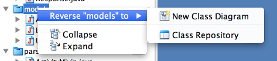

Objectives
Build pacemaker-1.0 from source using maven. Reverse engineer to UML and Structure 101. Uses these modeling tools on your own assignment
Solution Project
The solution will require maven to be installed on your computer.
Download and install the latest version if you havent done so already. Make sure it on your command line path, such that when you type:
mvnyou might get something like this:
pache Maven 3.0.3 (r1075438; 2011-02-28 17:31:09+0000)
Maven home: /Users/edeleastar/dev/bin/apache-maven-3.0.3
Java version: 1.6.0_51, vendor: Apple Inc.
Java home: /System/Library/Java/JavaVirtualMachines/1.6.0.jdk/Contents/Home
Default locale: en_US, platform encoding: MacRoman
OS name: "mac os x", version: "10.8.4", arch: "x86_64", family: "mac"
grendel3:prj edeleastar$This is the solution project here:
Download and unarchive.
It is a maven project, which includes these dependencies:
<dependencies>
<dependency>
<groupId>org.eclipse.xtend</groupId>
<artifactId>org.eclipse.xtend.lib</artifactId>
<version>${xtend.version}</version>
</dependency>
<dependency>
<groupId>junit</groupId>
<artifactId>junit</artifactId>
<version>4.11</version>
<scope>test</scope>
</dependency>
<dependency>
<groupId>com.google.guava</groupId>
<artifactId>guava</artifactId>
<version>15.0</version>
</dependency>
<dependency>
<groupId>com.thoughtworks.xstream</groupId>
<artifactId>xstream</artifactId>
<version>1.4.4</version>
</dependency>
<dependency>
<groupId>org.codehaus.jettison</groupId>
<artifactId>jettison</artifactId>
<version>1.3.4</version>
</dependency>
<dependency>
<groupId>asg-cliche</groupId>
<artifactId>asg-cliche</artifactId>
<version>1.0</version>
</dependency>
<dependency>
<groupId>btc-ascii-table</groupId>
<artifactId>btc-ascii-table</artifactId>
<version>1.0</version>
</dependency>
<dependency>
<groupId>org.codehaus.jackson</groupId>
<artifactId>jackson-core-asl</artifactId>
<version>1.9.13</version>
</dependency>
<dependency>
<groupId>com.fasterxml.jackson.core</groupId>
<artifactId>jackson-databind</artifactId>
<version>2.2.3</version>
</dependency>
<dependency>
<groupId>joda-time</groupId>
<artifactId>joda-time</artifactId>
<version>2.3</version>
</dependency>
</dependencies>Two of these dependencies are not in the public maven repositories:
Download these, and install them using the following maven commands:
mvn install:install-file -Dfile=btc-ascii-table-1.0.jar -DgroupId=btc-ascii-table -DartifactId=btc-ascii-table -Dversion=1.0 -Dpackaging=jarmvn install:install-file -Dfile=asg-cliche-1.0.jar -DgroupId=asg-cliche -DartifactId=asg-cliche -Dversion=1.0 -Dpackaging=jarThe project should build now. Try the following commands:
mvn compile
mvn test
mvn package
mvn eclipse:eclipseAfter the latter, the project can be imported into eclipse:
From there you should be able to execute it, and also run all tests.
Install Visual Paradigm
To reverse engineer your code to UML, you will need Visual Paradigm Standard Edition:
You will need this key here to enable the full standard edition features:
- Visual Paradigm Standard edition 11.2 U8XHD-LE49E-765X4-B5HGU-2R7RS
This is an 'Acadedmic License' - so enter it in the appropriate field.
In order to avoid excessive information in the UML diagrams, customise the defaults as follows:
Shape
Select Tools->Project Options->Diagramming->Shape to look like this:
Shape
Select Tools->Project Options->Shape to look like this:
Reverse Engineer Class Diagram
Select `Tools->Code Engineering->Instant Reverse->Java'
Press 'Add Source Folder' and select the 'xtend' from 'src/main/generated-sources' in the maven project as shown here:
Press finish - and Visual Paradigm should ingest the sources presenting you with a 'model' view:
Right click on a package - say models - and select 'Reverse To->New Class Diagram'

Which should produce this:
Name the package 'models' by directly typing in the top left of the canvas:

Reverse each of the other packages, and we should see something like this for each one (rename the packages as you go along)


Become familiar with the 'Diagram' view as well as the 'Model' view you have been using so far.
Most of the reverse engineering went as expected - representing key aspects of the model reasonable accurately. However, there are some deficiencies in the 'model' package - see if you can fix these now such that the model looks like this:

Reverse Engineer Sequence Diagrams
We can also reverse 'Sequence Diagrams' from the source, which yield a more dynamic view of the application.
In the Model view, select PacemakerService->createActivity and select 'Reverse To->Sequence Diagram':

This should yield this sequence diagram:

Here is a reverse of the createUser method in the same class:

Experiment with a few of the other methods.
NB: Reverse engineering the PacemakerShell class seems to be a bridge too far for Visual Paradigm, and seems to cause a freeze in the app.
Structure 101 Analysis
Visit the produce page for HradWay Software:
and download then Structure 101 product
You will need to register - and receive an activation key by email.
Reverse engineer the sample solution using the 101 tool. You will have seen the screen shots in the lecture of a 101 reverse of the project. User guides here:
Which should enable you to reproduce exactly the diagrams reviewed in the lecture.
Exercises
If you used java or a java derived language, you should be in a position to reverse engineer your solution using:
- Visual Paradigm for UML
- Structure 101
as reviewed in this lab. Do this now.
For Python and Objective-C, both Visual paradigm and Structure 101 seem to have support for these languages, in structure 101's case, this is via third party plugins.
In Visual Paradigm, these are available via the 'Tools->Code Engineering->Instant Reverse' menu. With Structure 101, you will need to install the Structure101g variant of the product, and fetch the plugins via the Flavors/Install menu.
Reverse Engineer of pacemaker-console-xtend
This is a Visual Paradigm reverse of the solution: